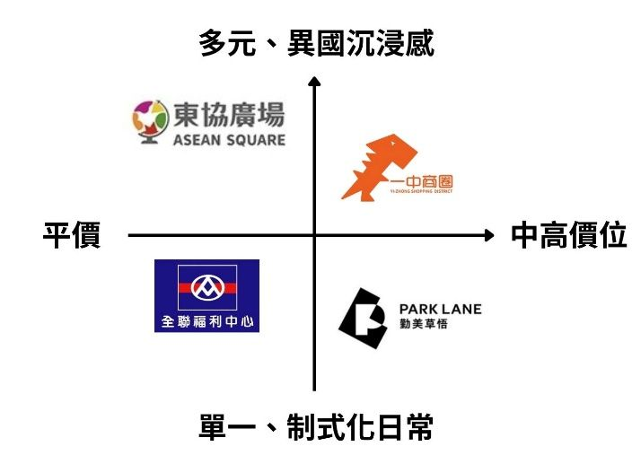
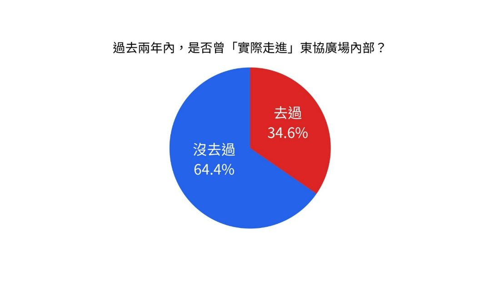

市場區隔
以人口統計、心理統計、行為三維度交叉檢視，並以五大有效特性（可衡量、足量、可接近、可差異化、可行動）評估。
| 年齡層 | 心理特徵 | 行為特徵 |
|---|---|---|
| 18 歲以下 | 好奇但缺乏深度認同；依賴家長價值觀，易信以為真 | 經濟受限、依賴接送；從眾觀望 |
| 20–35 歲 | 嚮往沉浸式體驗與平替微旅行；有探索渴望也有心理防壁 | 高度自主行動力；依賴數位社群與第一人稱開箱 |
| 35–50 歲 | 追求標準化與高度安全；深層刻板印象與抗拒 | 刻意迴避；短影音黏著度低，轉換誘因不足 |
目標客群
唯一核心目標：大臺中 20–35 歲青年學生、新鮮人與上班族。理由有三：
足量性
臺中 20–35 歲人口約占總人口 21.3%，基數龐大。
可接近性
活躍於 Instagram、Threads，可用短影音直接觸達。
可行動性
有交通力與預算，一旦破冰最容易轉化為實際造訪。
市場定位
全臺唯一兼具食衣住行育樂的東南亞沉浸式微型生活圈。
感知定位圖以 X 軸（平價 → 中高價位）與 Y 軸（單一制式 → 多元異國沉浸）呈現：東協廣場位於「平價 × 多元異國體驗」的市場空白區。

問卷調查（N=102）
曾於兩年內走進東協廣場者僅 34.6%，未曾踏入者高達 65.4%，呈現明顯的造訪斷層。

曾造訪者（34.6%）
多給正面評價：超市有趣、國外零食齊全、東西便宜、像出國一樣。
未造訪者（65.4%）
- 安全與環境顧慮：長輩告誡、治安疑慮
- 資訊與能見度不足：沒有年輕人分享、有未知感
- 期待改變：網紅推廣、打卡點、朋友推薦、獨特美食
RTB：支持理由
- 場域實質機能與正向體驗兼具：中文標示隨處可見，曾造訪者高度好評。
- 影片實地開箱見證：以探險喜劇影片破解治安與環境迷思。
- 消除資訊不對稱的轉化邏輯：短影音開箱與視覺化美食地圖，引導從觀望走向踩點。